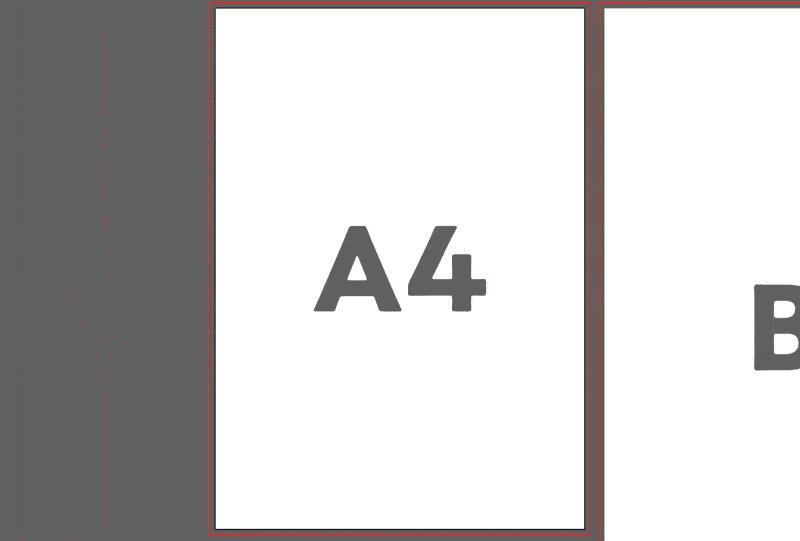

A・Bサイズの矩形、トンボを作成する 指定したA・Bサイズの矩形とトンボを自動でつくるスクリプトを作りました。  DOWNLOAD トンボメーカー.jsx 使い方や注意 [非推奨]Illustratorのディレクトリ/プリセット/jaJP/スクリプトにスクリプトファイルを置いて再起動すれば、ファイルメニュー→スクリプトにトンボメーカーが追加されます。 [推奨]使用時は別作者様のSPAiやScripshon Treesを使うと、ファイルメニューから実行しなくていい上、入れ替えた後の再起動も必要なく楽です。 デバッグはしていますがしているつもりですが、まだ不具合がある可能性があるので、バックアップの後ご使用お願いします。 不具合や改善点などがあればTwitterの@takumikunn15までよろしくおねがいします。 更新履歴 Ver1.0(2020/08/06) 公開 バグありませんように...
使い方や注意
[非推奨]Illustratorのディレクトリ/プリセット/jaJP/スクリプトにスクリプトファイルを置いて再起動すれば、ファイルメニュー→スクリプトにトンボメーカーが追加されます。
[推奨]使用時は別作者様のSPAiやScripshon Treesを使うと、ファイルメニューから実行しなくていい上、入れ替えた後の再起動も必要なく楽です。
デバッグは
していますがしているつもりですが、まだ不具合がある可能性があるので、バックアップの後ご使用お願いします。不具合や改善点などがあればTwitterの@takumikunn15までよろしくおねがいします。